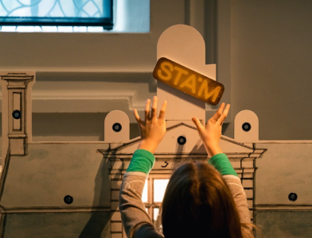

- Van 21 april 2024 t.e.m. 30 december 2024
- Zaalteksten: Nederlands
- Gratis, op het STAMplein
- Een initiatief van Burgerplicht vzw, Erfgoedcel Gent, Collectie van de Gentenaar en het STAM
- I.s.m. Ergenekon, Posküder, Enderun, Rede, Studiebegeleiding Actief & Studentenvereniging Flux
Beeld: Yener Demirci
Zestig jaar geleden kwam de Turkse migratie naar Gent op gang. Vandaag heeft bijna een tiende van de
Gentenaren Turkse roots...
Wat moeten we uit de voorbije decennia van Turkse migratie naar Gent bewaren voor toekomstige generaties...
Nu ook in het STAM

Permanent
Doe je ‘Het verhaal van Gent’, dan kom je een gezellig familieatelier tegen vol met bouwelementen...

Permanent
Doe je ‘Het verhaal van Gent’, dan kom je een gezellig familieatelier tegen vol met bouwelementen...

03.05.2024 - 09.03.2024
Het STAMplein is een gratis stukje museum met een wisselende programmatie...